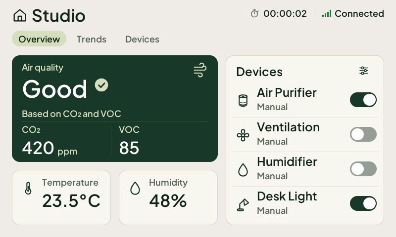
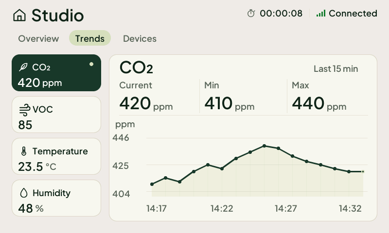
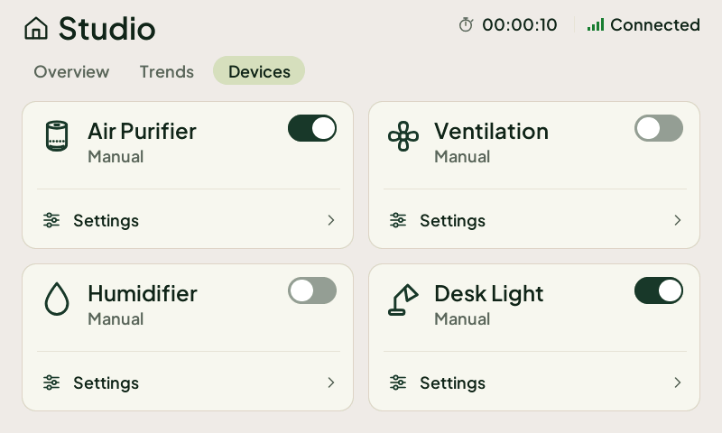
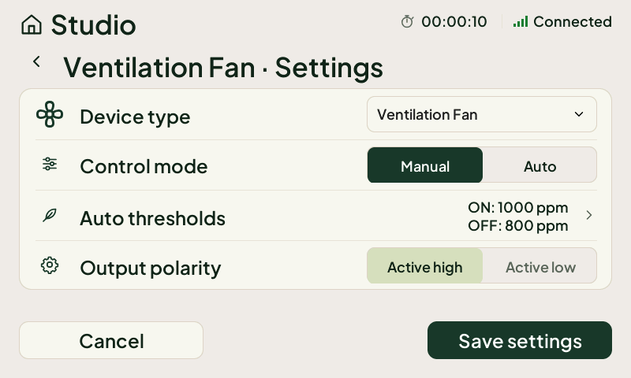
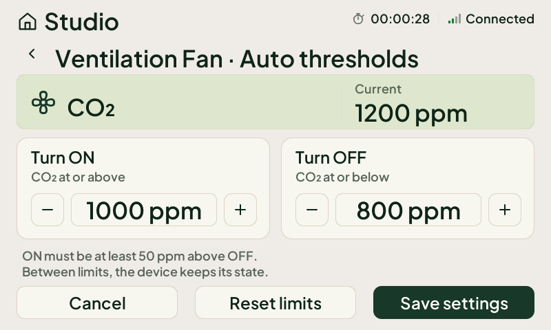
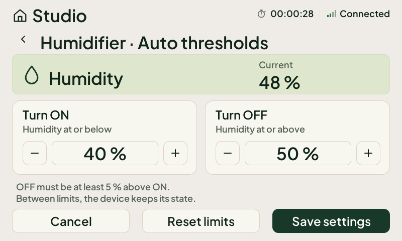
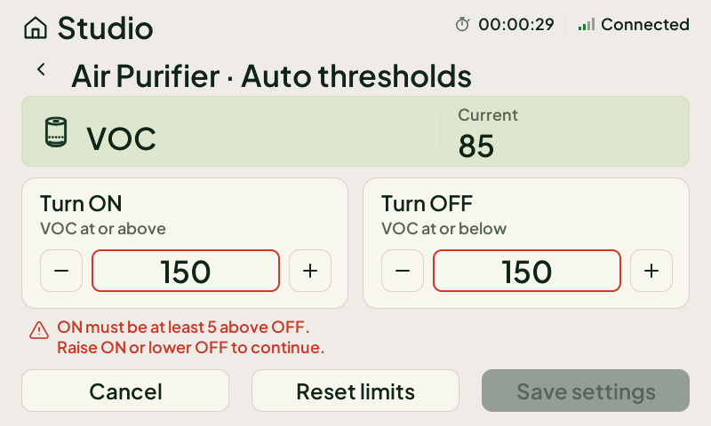

Quiet Architecture: original / RGB565 only / current native
Ảnh gốc giữ nguyên. Cột giữa chỉ áp dụng lượng tử hóa RGB565 bằng SVG filter sRGB trong trình duyệt, không đổi layout, icon hay font. Cột cuối là framebuffer LVGL 800×480 thật. Đây là công cụ tách nguyên nhân, không phải mockup mới hay mô phỏng đặc tính quang học LCD. Cuộn ngang để xem ba cột. Fixture dữ liệu/mode chưa hoàn toàn khớp ảnh gốc.
Median là mẫu màu đo tại vùng cụ thể, không phải một bộ design token được tác giả ảnh cung cấp. Hero gốc có chuyển sắc; không thể mô tả bằng một mã duy nhất.
Overview
Original / normalized 800×480Same original / RGB565 onlyCurrent native / home_good

Trends
Original / normalized 800×480Same original / RGB565 onlyCurrent native / trends_data

Devices
Original / normalized 800×480Same original / RGB565 onlyCurrent native / devices_grid

Settings
Original / normalized 800×480Same original / RGB565 onlyCurrent native / devices_settings

Auto CO2
Original / normalized 800×480Same original / RGB565 onlyCurrent native / devices_auto_thresholds

Auto Humidity
Original / normalized 800×480Same original / RGB565 onlyCurrent native / devices_auto_humidifier

Auto VOC invalid
Original / normalized 800×480Same original / RGB565 onlyCurrent native / devices_auto_invalid_draft

Icon crops — 4× cùng tỷ lệ màn hình
So sánh cả hình dáng lẫn kích thước nét thật. Không kéo từng icon cho bằng nhau rồi tuyên bố đã khớp.